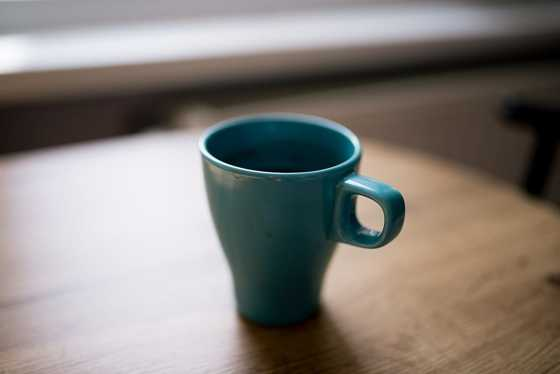

ABOUT
手づくりの、山の奥の小さなお店
くるみカフェは、小樽市オタモイの山の奥にある、カフェと雑貨屋さんです。公式Instagramのアカウント名には「handmade」とあり、手づくりを大切にするお店であることがうかがえます。
Instagramでは、ケーキやタルト、パン、クッキーなどの焼き菓子・ベーカリー系の写真や、「焙煎」のハイライトが紹介されています。
確認できた事実:山の奥のカフェと雑貨屋さん/アカウント名に handmade/お支払いは現金のみ(Instagramプロフィールより)/営業日・営業時間は投稿で案内。
店名の意味や開業の経緯は確認できていません。「くるみ」の響きから、殻に包まれた実のようなこもれる場所を思い浮かべるのは、制作側のイメージです。
店名の意味や開業の経緯は確認できていません。「くるみ」の響きから、殻に包まれた実のようなこもれる場所を思い浮かべるのは、制作側のイメージです。



写真はすべてフリー素材のイメージで、店舗の実際の様子ではありません。実際の写真はお店ご提供のものに差し替えます。